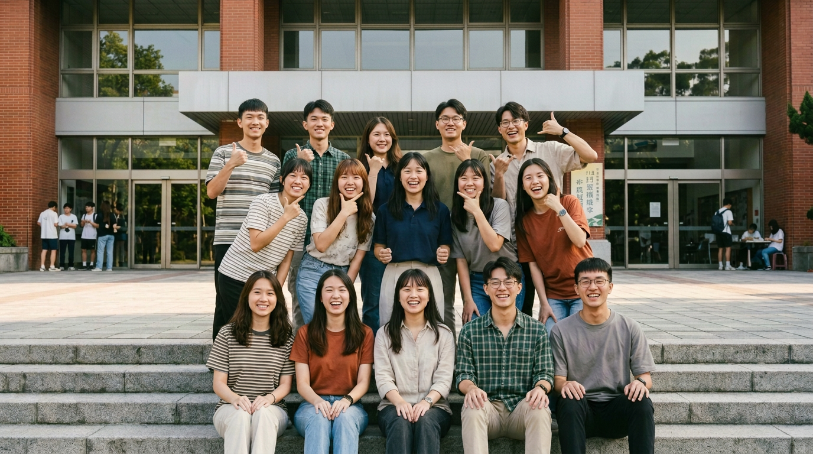

我不知道他今天生日，即使一起在系上共事了很多次，我們好像還是不熟。聚會、出遊，任何課業、系上活動外的事物，他們很少邀我參加。
這張的構圖好好看！我也想拍出這樣的照片，但我已經很久沒碰相機了，光是用系上活動和課堂上的事情就讓我忙得快喘不過氣了⋯⋯
沒想到已經高中畢業四年了⋯⋯好想念高中那群朋友們⋯⋯大家每天都聚在一起、形影不離。現在在大學裡大家都來來去去，我也一直在跟隨著大家的步伐，但我究竟是為了什麼呢⋯⋯？

K
沐微早上到下午都在幫忙，晚餐和系上同學們一起去吃了快炒，
吃飯時大家都在聊一個沐微不認識的人的故事，她有時候會點個頭附和一下，然後繼續吃她的飯。
回家後，沐微打開手機，看見攝影群組中有人發了當天的攝影照：「今天的天氣很好，構圖出來很漂亮！」
「這次是去對了嗎？」
沐微一大早就去郊區和「一起趣攝影」的夥伴們會合，一開始沐微都自己一個人在旁邊拍， 後來一位叫小婷的女生過來詢問沐微都是怎麼取景的，兩人邊聊邊拍，時間不知不覺就過去了。
「好累⋯⋯但今天過的很充實！」
「其他人的動態滑一滑，又到睡覺時間了，計劃書被我拖了好久好久⋯⋯」